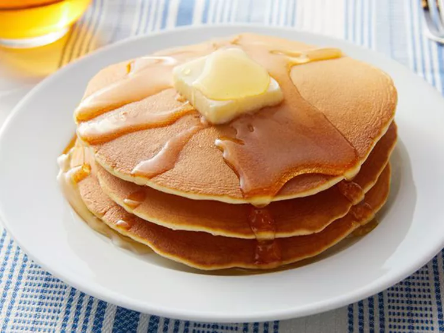

Back to HomePage...
Pancakes

Description
This easy pancake recipe doesn't require much thought
early in the morning and the pancakes taste great!
Ingredients
- 1 cup all-purpose flour
- 2 tablespoons white sugar
- 2 teaspoons baking powder
- ½ teaspoon salt, or to taste
- 1 cup milk
- 2 tablespoons vegetable oil
- 1 large egg, beaten
Steps
- In a large bowl, mix flour, sugar, baking powder, and salt.
- In another bowl, whisk milk and vegetable oil together.
- Pour the wet ingredients into the dry ingredients and mix until just combined.
- Heat a lightly oiled griddle or frying pan over medium-high heat.
- Pour ¼ cup of batter for each pancake onto the griddle.
- Cook until bubbles form on the surface, then flip and cook until golden brown.